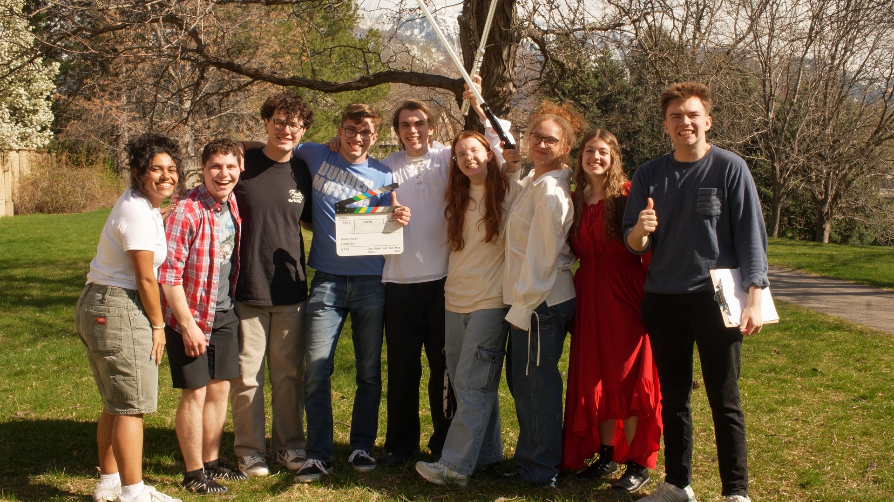
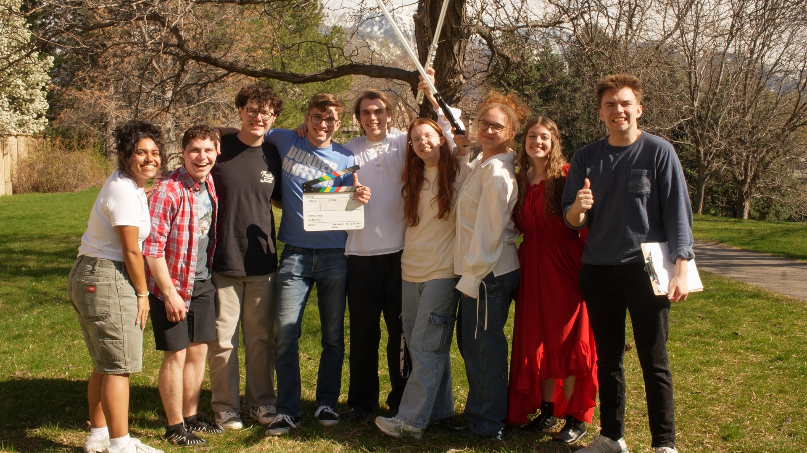

Karley M Joseph | 22 yrs old
Utah Filmmaker | UVU Student
Throughout my life I've gravitated through different mediums of storytelling, from literature to music, but I always find myself back to Film. Film is a beautiful symphony of all forms of storytelling, it's art through the visuals, it's literature through the characters and the world, and it's music with soundtracks that enhance the message. As a director I've learned that it's important to incorporate my love of other forms of storytelling into the films I create.